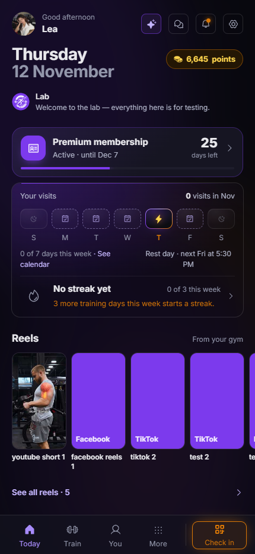

Check in
 Premium · valid to Dec 7
Premium · valid to Dec 7
Checked in0 visits in Nov
Bench press
Set 140 kg × 8
Set 240 kg × 8
Set 342.5 kg × 8
New record · Bench press42.5 kg × 8

Premium · valid to Dec 7